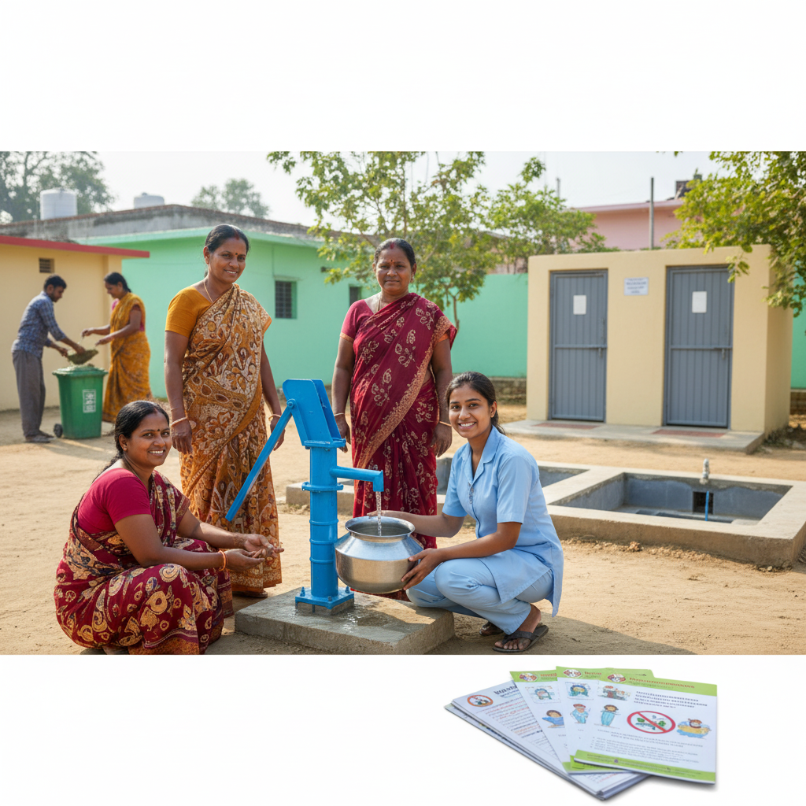

पर्यावरण स्वच्छता पर 50 MCQ (भाग 6)
यह ANM परीक्षा के लिए पर्यावरण स्वच्छता, सुरक्षित जल और अपशिष्ट निपटान पर आधारित 50 महत्वपूर्ण बहुविकल्पीय प्रश्न (MCQ) का नया सेट है।
-
पर्यावरण स्वच्छता का मुख्य उद्देश्य क्या है?
- A. केवल घर को साफ रखना
- B. मानव स्वास्थ्य के लिए पर्यावरण को सुरक्षित और स्वच्छ बनाना
- C. केवल पानी को शुद्ध करना
- D. केवल हवा को साफ करना
सही उत्तर: B. मानव स्वास्थ्य के लिए पर्यावरण को सुरक्षित और स्वच्छ बनाना
-
पीने के लिए सुरक्षित पानी (Safe Water) का मुख्य लक्षण क्या है?
- A. स्वाद में मीठा हो
- B. रंगहीन, गंधहीन और रोगजनक जीवों से मुक्त हो
- C. बहुत ठंडा हो
- D. पानी का पीएच उच्च हो
सही उत्तर: B. रंगहीन, गंधहीन और रोगजनक जीवों से मुक्त हो
-
जल जनित रोग (Waterborne Disease) का एक उदाहरण क्या है?
- A. मलेरिया
- B. हैजा (Cholera)
- C. टीबी
- D. खसरा
सही उत्तर: B. हैजा (Cholera)
-
पानी को शुद्ध करने का सबसे सस्ता और प्रभावी तरीका क्या है?
- A. छानना (Filtering)
- B. क्लोरीन मिलाना
- C. उबालना
- D. रासायनिक उपचार
सही उत्तर: C. उबालना
-
शौच (Excreta) का सुरक्षित निपटान क्यों महत्वपूर्ण है?
- A. केवल बदबू को दूर करने के लिए
- B. मक्खियों और कीड़ों को पनपने से रोकने और संक्रामक रोगों को रोकने के लिए
- C. मिट्टी को उपजाऊ बनाने के लिए
- D. केवल कानूनी आवश्यकता को पूरा करने के लिए
सही उत्तर: B. मक्खियों और कीड़ों को पनपने से रोकने और संक्रामक रोगों को रोकने के लिए
-
सबसे सरल और सुरक्षित शौचालय प्रणाली कौन-सी है?
- A. बाल्टी शौचालय
- B. गड्ढा शौचालय (Pit Latrine)
- C. सेप्टिक टैंक
- D. खुले में शौच
सही उत्तर: B. गड्ढा शौचालय (Pit Latrine)
-
ठोस अपशिष्ट (Solid Waste) के निपटान की सबसे अच्छी विधि क्या है?
- A. खुले में फेंकना
- B. भस्मीकरण (Incineration)
- C. नियंत्रित लैंडफिल (Sanitary Landfill)
- D. नदी में फेंकना
सही उत्तर: C. नियंत्रित लैंडफिल (Sanitary Landfill)
-
समुदाय की सक्रिय भागीदारी (Community Participation) स्वच्छता कार्यक्रमों में क्यों आवश्यक है?
- A. केवल धन जुटाने के लिए
- B. कार्यक्रम की सफलता, स्वामित्व और दीर्घकालिक स्थिरता सुनिश्चित करने के लिए
- C. केवल जागरूकता फैलाने के लिए
- D. सरकार के काम को कम करने के लिए
सही उत्तर: B. कार्यक्रम की सफलता, स्वामित्व और दीर्घकालिक स्थिरता सुनिश्चित करने के लिए
-
पानी में क्लोरीन डालने का मुख्य उद्देश्य क्या है?
- A. पानी को स्वादिष्ट बनाना
- B. पानी को रंगहीन बनाना
- C. पानी में मौजूद कीटाणुओं को मारना
- D. पानी को ठंडा करना
सही उत्तर: C. पानी में मौजूद कीटाणुओं को मारना
-
घर के कचरे का जैविक रूप से अपघटन (Decomposition) करने की विधि क्या कहलाती है?
- A. भस्मीकरण
- B. पुनर्चक्रण (Recycling)
- C. खाद बनाना (Composting)
- D. लैंडफिल
सही उत्तर: C. खाद बनाना (Composting)
-
समुदाय को सुरक्षित पेयजल के महत्व के बारे में कौन बता सकता है?
- A. केवल डॉक्टर
- B. ANM और स्वास्थ्य कार्यकर्ता
- C. केवल शिक्षक
- D. केवल नेता
सही उत्तर: B. ANM और स्वास्थ्य कार्यकर्ता
-
किस रोग के संचरण में शौच का असुरक्षित निपटान एक प्रमुख कारक है?
- A. मधुमेह
- B. हृदय रोग
- C. पोलियो और टाइफाइड
- D. अस्थमा
सही उत्तर: C. पोलियो और टाइफाइड
-
मानव अपशिष्ट के निपटान की सबसे स्वच्छ विधि कौन-सी है?
- A. सीवरेज सिस्टम
- B. खुले में शौच
- C. नदी में विसर्जन
- D. बाल्टी शौचालय
सही उत्तर: A. सीवरेज सिस्टम
-
पुनर्चक्रण (Recycling) का 'R' क्या दर्शाता है?
- A. Reduce (कम करना)
- B. Reuse (पुन: उपयोग)
- C. Recycle (पुनर्चक्रण)
- D. उपरोक्त सभी
सही उत्तर: C. Recycle (पुनर्चक्रण)
-
पानी के स्रोत के पास शौच करने से क्या हो सकता है?
- A. पानी का वाष्पीकरण
- B. जल प्रदूषण और जल जनित रोगों का खतरा
- C. मिट्टी की उर्वरता में वृद्धि
- D. हवा की गुणवत्ता में सुधार
सही उत्तर: B. जल प्रदूषण और जल जनित रोगों का खतरा
-
मच्छरों के प्रजनन को रोकने के लिए सबसे प्रभावी तरीका क्या है?
- A. कीटनाशकों का छिड़काव
- B. पानी के ठहराव को रोकना
- C. मच्छरदानी का उपयोग
- D. कपड़े पहनना
सही उत्तर: B. पानी के ठहराव को रोकना
-
बायोमेडिकल अपशिष्ट (Biomedical Waste) का निपटान कैसे किया जाना चाहिए?
- A. सामान्य कचरे के साथ फेंक देना
- B. विशेष रंग-कोडित बैग में एकत्र कर सुरक्षित निपटान करना
- C. खुले में जलाना
- D. मिट्टी में गाड़ देना
सही उत्तर: B. विशेष रंग-कोडित बैग में एकत्र कर सुरक्षित निपटान करना
-
स्वच्छ भारत मिशन (Swachh Bharat Mission) का मुख्य उद्देश्य क्या है?
- A. सभी को मुफ्त बिजली प्रदान करना
- B. खुले में शौच मुक्त (ODF) भारत प्राप्त करना
- C. शहरों में पार्क बनाना
- D. केवल स्कूलों का निर्माण करना
सही उत्तर: B. खुले में शौच मुक्त (ODF) भारत प्राप्त करना
-
पानी की कठोरता (Hardness) किसके कारण होती है?
- A. सोडियम और पोटेशियम के लवण
- B. कैल्शियम और मैग्नीशियम के लवण
- C. आयरन और जिंक
- D. क्लोरीन
सही उत्तर: B. कैल्शियम और मैग्नीशियम के लवण
-
निम्नलिखित में से कौन-सा रोग हवा जनित (Airborne) है?
- A. टाइफाइड
- B. खसरा (Measles)
- C. हैजा
- D. पेचिश (Dysentery)
सही उत्तर: B. खसरा (Measles)
-
कुएँ (Well) के पानी को कीटाणुरहित करने के लिए क्या इस्तेमाल किया जाता है?
- A. नमक
- B. ब्लीचिंग पाउडर
- C. चीनी
- D. सिरका
सही उत्तर: B. ब्लीचिंग पाउडर
-
अपशिष्ट निपटान के लिए 3R सिद्धांत क्या हैं?
- A. Read, Relax, Replicate
- B. Reduce, Reuse, Recycle
- C. Repair, Reuse, Remove
- D. Research, Report, Restore
सही उत्तर: B. Reduce, Reuse, Recycle
-
घर के कचरे का जैविक रूप से अपघटन (Decomposition) करने की विधि क्या कहलाती है?
- A. भस्मीकरण
- B. पुनर्चक्रण (Recycling)
- C. खाद बनाना (Composting)
- D. लैंडफिल
सही उत्तर: C. खाद बनाना (Composting)
-
जल जनित रोग जैसे हैजा और टाइफाइड से बचने के लिए क्या आवश्यक है?
- A. गर्म कपड़े पहनना
- B. सुरक्षित पेयजल और शौच का सुरक्षित निपटान
- C. अधिक सोना
- D. अधिक खाना
सही उत्तर: B. सुरक्षित पेयजल और शौच का सुरक्षित निपटान
-
एक आदर्श शौचालय में क्या होना चाहिए?
- A. केवल एक गड्ढा
- B. एक पानी सील (Water Seal) और मक्खी/मच्छर प्रूफ वेंट
- C. बिजली
- D. केवल एक दरवाजा
सही उत्तर: B. एक पानी सील (Water Seal) और मक्खी/मच्छर प्रूफ वेंट
-
पानी कीटाणुशोधन (Disinfection) की सबसे प्रभावी विधि कौन-सी है?
- A. केवल छानना
- B. क्लोरीन मिलाना
- C. फ़िल्ट्रेशन
- D. आसवन (Distillation)
सही उत्तर: B. क्लोरीन मिलाना
-
सीवेज (Sewage) क्या है?
- A. केवल बारिश का पानी
- B. मानव अपशिष्ट युक्त पानी और घरेलू अपशिष्ट जल
- C. केवल औद्योगिक अपशिष्ट
- D. स्वच्छ पेयजल
सही उत्तर: B. मानव अपशिष्ट युक्त पानी और घरेलू अपशिष्ट जल
-
स्वच्छता शिक्षा का मुख्य लक्ष्य क्या है?
- A. लोगों को दंडित करना
- B. लोगों को सुरक्षित और स्वच्छ आदतें अपनाने के लिए प्रेरित करना
- C. केवल पैसे कमाना
- D. केवल साक्षरता बढ़ाना
सही उत्तर: B. लोगों को सुरक्षित और स्वच्छ आदतें अपनाने के लिए प्रेरित करना
-
सूखे कचरे (Dry Waste) का एक उदाहरण क्या है?
- A. बचा हुआ भोजन
- B. प्लास्टिक और कागज
- C. सब्जियां
- D. फल
सही उत्तर: B. प्लास्टिक और कागज
-
पानी के शुद्धिकरण के लिए उपयोग किया जाने वाला सबसे आम रासायनिक एजेंट क्या है?
- A. फ्लोराइड
- B. सोडियम
- C. क्लोरीन
- D. जिंक
सही उत्तर: C. क्लोरीन
-
घर पर पानी को शुद्ध करने के लिए सूर्य के प्रकाश का उपयोग करने की विधि क्या कहलाती है?
- A. सौर आसवन (Solar Distillation)
- B. सौर जल शुद्धिकरण (Solar Water Disinfection - SODIS)
- C. पराबैंगनी विकिरण (UV Radiation)
- D. छानना
सही उत्तर: B. सौर जल शुद्धिकरण (Solar Water Disinfection - SODIS)
-
कचरे को छांटना (Segregation) क्यों महत्वपूर्ण है?
- A. यह कचरे को कम करने में मदद करता है और पुनर्चक्रण को आसान बनाता है
- B. यह केवल एक कानूनी आवश्यकता है
- C. यह कचरे को अधिक गंधयुक्त बनाता है
- D. यह कचरे को बढ़ा देता है
सही उत्तर: A. यह कचरे को कम करने में मदद करता है और पुनर्चक्रण को आसान बनाता है
-
पाइप से पानी की आपूर्ति में रिसाव (Leakage) होने पर क्या हो सकता है?
- A. पानी की गुणवत्ता में सुधार
- B. पानी का संदूषण (Contamination) और पानी का नुकसान
- C. पानी का दबाव बढ़ना
- D. बिजली का बिल कम होना
सही उत्तर: B. पानी का संदूषण (Contamination) और पानी का नुकसान
-
जल भंडारण के लिए किस प्रकार के कंटेनरों का उपयोग करना चाहिए?
- A. खुले और गंदे कंटेनर
- B. ढके हुए, साफ और पीने के पानी के लिए समर्पित कंटेनर
- C. धातु के पुराने कंटेनर
- D. टूटे हुए कंटेनर
सही उत्तर: B. ढके हुए, साफ और पीने के पानी के लिए समर्पित कंटेनर
-
खुले में शौच करने से कौन-सा रोग नहीं फैलता है?
- A. हैजा
- B. टाइफाइड
- C. पीलिया
- D. मधुमेह (Diabetes)
सही उत्तर: D. मधुमेह (Diabetes)
-
समुदाय को स्वच्छ रखने की जिम्मेदारी किसकी है?
- A. केवल सरकार की
- B. केवल स्वास्थ्य कार्यकर्ताओं की
- C. सभी समुदाय के सदस्यों की
- D. केवल बच्चों की
सही उत्तर: C. सभी समुदाय के सदस्यों की
-
पीने के पानी में फ्लोराइड की अधिकता से कौन-सा रोग होता है?
- A. दस्त
- B. फ्लोरोसिस (Fluorosis)
- C. मलेरिया
- D. टीबी
सही उत्तर: B. फ्लोरोसिस (Fluorosis)
-
अस्पताल के अपशिष्ट में नुकीली वस्तुएं (जैसे सुई) किस श्रेणी के तहत आती हैं?
- A. सामान्य अपशिष्ट
- B. बायोमेडिकल अपशिष्ट
- C. प्लास्टिक अपशिष्ट
- D. घरेलू अपशिष्ट
सही उत्तर: B. बायोमेडिकल अपशिष्ट
-
पानी के पुनर्चक्रण (Recycling) का उद्देश्य क्या है?
- A. केवल पानी को ठंडा करना
- B. पीने के पानी के रूप में फिर से उपयोग करना
- C. गैर-पीने योग्य उद्देश्यों के लिए पानी का संरक्षण और पुन: उपयोग
- D. पानी की बर्बादी बढ़ाना
सही उत्तर: C. गैर-पीने योग्य उद्देश्यों के लिए पानी का संरक्षण और पुन: उपयोग
-
शौचालय के गड्ढे में कीचड़ (Sludge) के भरने के बाद किस प्रकार का निपटान किया जाता है?
- A. खाली गड्ढे को छोड़ देना
- B. गड्ढे को खाली करके नया बनाना
- C. गड्ढे को ढँक कर कुछ समय बाद खाद के रूप में उपयोग करना
- D. गड्ढे को गहरा करना
सही उत्तर: C. गड्ढे को ढँक कर कुछ समय बाद खाद के रूप में उपयोग करना
-
अस्पताल के बायोमेडिकल अपशिष्ट को संभालने के लिए कौन-सा रंग कोड इस्तेमाल किया जाता है?
- A. सफेद
- B. हरा
- C. लाल और पीला
- D. नीला
सही उत्तर: C. लाल और पीला
-
वायु प्रदूषण का मुख्य कारण क्या है?
- A. केवल वर्षा
- B. औद्योगिक उत्सर्जन और वाहनों का धुआँ
- C. पेड़ लगाना
- D. घरों की सफाई
सही उत्तर: B. औद्योगिक उत्सर्जन और वाहनों का धुआँ
-
स्वच्छता अभियान में समुदाय के बीच जागरूकता बढ़ाने का सबसे अच्छा तरीका क्या है?
- A. केवल सरकार से आदेश देना
- B. नुक्कड़ नाटक, समूह चर्चा और रोल-प्ले का उपयोग करना
- C. केवल पोस्टर लगाना
- D. चुप रहना
सही उत्तर: B. नुक्कड़ नाटक, समूह चर्चा और रोल-प्ले का उपयोग करना
-
सुरक्षित पेयजल को संग्रहित करने के लिए सबसे महत्वपूर्ण नियम क्या है?
- A. बर्तन को खुला छोड़ देना
- B. बर्तन को ढककर रखना और बार-बार हाथ धोना
- C. पीने के पानी में बर्फ डालना
- D. पानी को एक सप्ताह तक रखना
सही उत्तर: B. बर्तन को ढककर रखना और बार-बार हाथ धोना
-
अंगों को दान करने वाले (Donors) के लिए अंग कैसे संग्रहित किए जाते हैं?
- A. गर्म तापमान पर
- B. बहुत कम तापमान पर (कोल्ड चेन)
- C. सामान्य कमरे के तापमान पर
- D. हवा में खुला रखकर
सही उत्तर: B. बहुत कम तापमान पर (कोल्ड चेन)
-
पर्यावरण स्वच्छता का महत्व स्वास्थ्य कार्यकर्ता समुदाय को कैसे समझा सकता है?
- A. केवल आदेश देकर
- B. स्वच्छता और रोग की रोकथाम के बीच संबंध समझाकर
- C. उन्हें दंडित करके
- D. चुप रहकर
सही उत्तर: B. स्वच्छता और रोग की रोकथाम के बीच संबंध समझाकर
-
घरेलू स्तर पर पानी को छानने (Filtering) का उद्देश्य क्या है?
- A. पानी को स्वादिष्ट बनाना
- B. पानी से बड़े अशुद्ध कणों को हटाना
- C. पानी में कीटाणुओं को मारना
- D. पानी को ठंडा करना
सही उत्तर: B. पानी से बड़े अशुद्ध कणों को हटाना
-
कम्युनिटी टॉयलेट (सामुदायिक शौचालय) को ठीक से क्यों बनाए रखा जाना चाहिए?
- A. केवल पैसे बचाने के लिए
- B. रोग के प्रसार को रोकने और उपयोग को प्रोत्साहित करने के लिए
- C. केवल दिखने में अच्छा लगे
- D. किसी को भी उपयोग करने की अनुमति नहीं देने के लिए
सही उत्तर: B. रोग के प्रसार को रोकने और उपयोग को प्रोत्साहित करने के लिए
-
एक गंदा परिवेश किस प्रकार के रोग के लिए एक जलाशय (Reservoir) का काम करता है?
- A. गैर-संचारी रोग (Non-communicable diseases)
- B. संचारी रोग (Communicable diseases)
- C. आनुवंशिक रोग (Genetic diseases)
- D. मानसिक रोग
सही उत्तर: B. संचारी रोग (Communicable diseases)